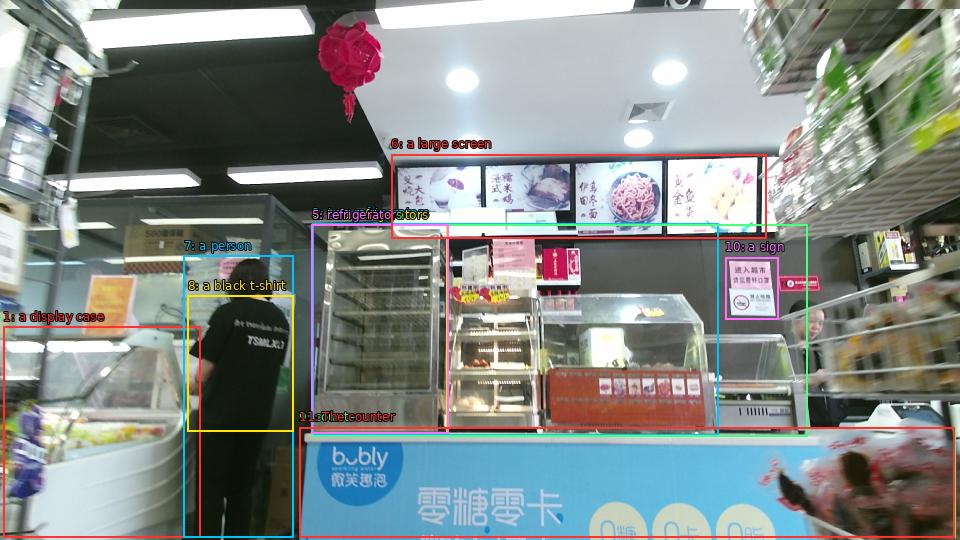

The image shows the interior of a convenience store. The store appears to be well-stocked with various items for sale. On the left side of the image, there is a display case with a variety of snacks and drinks. In the center of the store, there are two refrigerators with different types of food inside. Above the refrigerators, there has a large screen displaying images of different types and prices. In front of the display case, a person wearing a black t-shirt is standing behind a counter with a sign that reads "bobby" in Chinese. The counter is decorated with a red rose hanging from the ceiling.

Original · Caption raw · Grounding raw · Koordinate
Številke so lokalni ID regije. Dolge slikovne oznake so skrajšane; spodaj so celotne fraze. Napovedane regije se lahko prekrivajo ali opisujejo skupine.
| ID | Celotna fraza | bbox xyxy |
|---|---|---|
| 1 | a display case | [3.359999895095825, 326.9700012207031, 200.1599884033203, 537.5700073242188] |
| 2 | two refrigerators | [312.47998046875, 223.29000854492188, 718.5599975585938, 435.510009765625] |
| 3 | two refrigerators | [311.5199890136719, 224.91000366210938, 447.8399963378906, 433.8900146484375] |
| 4 | refrigerators | [311.5199890136719, 224.91000366210938, 807.8399658203125, 436.59002685546875] |
| 5 | refrigerator | [311.5199890136719, 224.91000366210938, 448.79998779296875, 433.8900146484375] |
| 6 | a large screen | [391.1999816894531, 154.17001342773438, 766.5599975585938, 238.95001220703125] |
| 7 | a person | [183.83999633789062, 255.6900177001953, 293.2799987792969, 537.030029296875] |
| 8 | a black t-shirt | [187.67999267578125, 295.6500244140625, 293.2799987792969, 431.19000244140625] |
| 9 | counter | [299.0400085449219, 427.4100036621094, 955.6799926757812, 537.5700073242188] |
| 10 | a sign | [725.2799682617188, 257.30999755859375, 778.0799560546875, 319.4100036621094] |
| 11 | The counter | [299.0400085449219, 427.4100036621094, 954.719970703125, 537.5700073242188] |